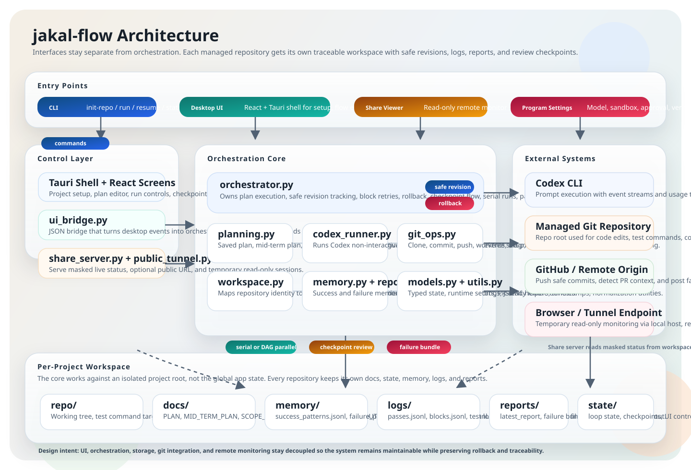

저장소 연결
GitHub 저장소를 가져오고, 워크스페이스 안에서 안전하게 관리합니다.
GitHub Pages Landing
codex-auto는 여러 저장소를 하나의 워크스페이스에서 관리하면서, 장기 계획부터 블록 단위 실행, 테스트, 체크포인트, 기록까지 추적 가능한 자동화 루프로 연결합니다.
장기 프롬프트 또는 개선할 저장소
Codex가 블록을 생성하고 우선순위를 제안
각 블록이 끝날 때까지 반복 실행
테스트 실패 시 즉시 rollback

How It Moves
GitHub 저장소를 가져오고, 워크스페이스 안에서 안전하게 관리합니다.
사용자 프롬프트나 저장소 문맥을 바탕으로 장기 계획을 만듭니다.
Codex가 실제 구현 가능한 블록 목록을 만들고, 사용자는 이를 확인하거나 조정할 수 있습니다.
각 블록마다 구현, 테스트, 실패 시 롤백, 성공 시 안전 커밋을 반복합니다.
정해진 경계마다 결과를 검토하고 GitHub와 동기화해 흔적을 남깁니다.
Why Codex Auto
저장소마다 별도 문서, 로그, 메모리, 상태를 유지합니다. 프로젝트가 섞이지 않습니다.
LONG TERM PLAN, MID TERM PLAN, ACTIVE TASK, BLOCK REVIEW를 통해 현재 위치를 명확히 남깁니다.
각 pass 뒤 테스트를 실행하고, 회귀가 생기면 이전 safe revision으로 되돌립니다.
타임라인, 블록 진행, Codex 상태, 체크포인트, 모델/추론 강도를 한 화면에서 확인합니다.
Workspace Structure
실제 코드 변경이 일어나는 저장소 복제본
장기 계획, 중기 계획, 체크포인트, 액티브 태스크
성공 패턴, 실패 패턴, 작업 요약
Codex 이벤트, pass 로그, 테스트 결과
루프 상태와 체크포인트 상태
최신 상태 요약과 보고서 출력
Contact
codex-auto에 대한 질문이나 협업 제안이 있다면 메일로 연락할 수 있습니다. GitHub Pages에 올려도 바로 연락 경로가 보이도록 구성했습니다.